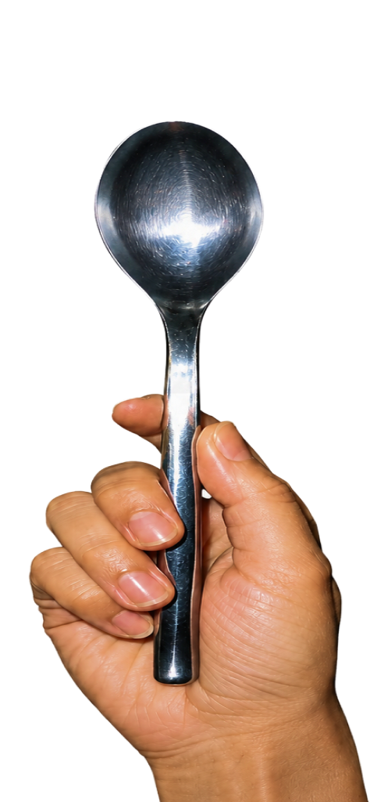
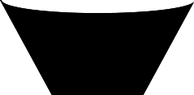
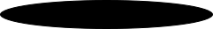
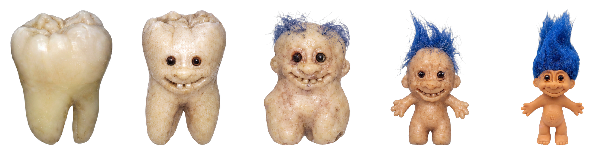
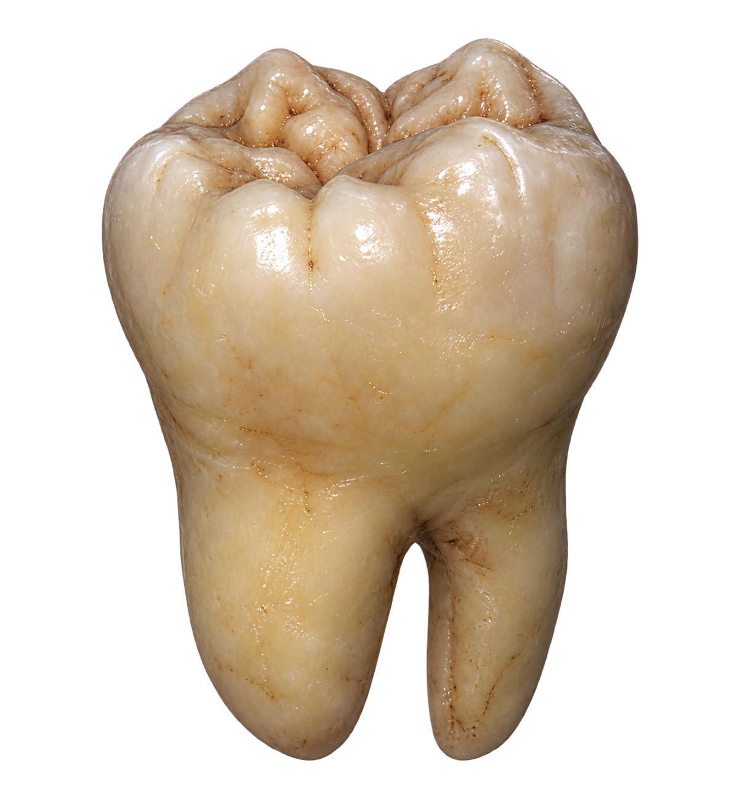
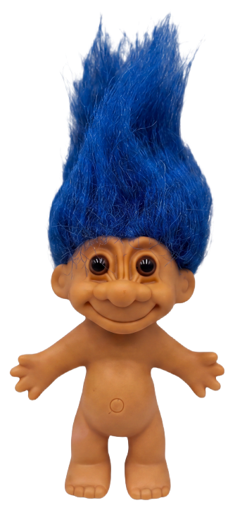

02
Nothing in the interface pretends to be software. It is a kitchen: two things go in a bowl, a hand stirs them.
Dashed slots — empty until you fill them

A real hand, a real spoon


The bowl fills with your own two images
One button, one verb
04
01
Upload
Drop the first image into the dashed slot.
02
Upload again
The second image goes in below it. Nothing else to configure.
03
Mix
The hand stirs the bowl while the two images churn together.
04
Read the result
Five clickable steps from A to B, plus an encyclopedia entry for the object in the middle.
05
01
Grid template
Your two images are sent together with an empty 5-cell grid.
02
fal.ai
gpt-image-2 edits into the grid: 01 = A, 05 = B, 03 = the hybrid, 02 / 04 the mutations in between.
03
grid-crop.js
Slices the returned grid into five, drops the white background, trims and centers each one.
04
Claude · vision
Looks at the midpoint and writes its encyclopedia entry — description, function, references, "this article is a stub".
05
Result window
Five steps and the article, ready to click through.
Built with fal.ai · gpt-image-2 · Claude · Claude Code · Figma. Keys never touch the browser — every call goes through a proxy.
06

Every mix ends as a five-step spectrum and one written specimen. → Live demo
Upload two objects. TOOOL generates the one that should not exist in between.


A tool in the browser, not a poster. You make your own object — the piece is only finished once someone uses it.
Every result is an analog documentary photograph: 35mm, hard direct flash, white seamless paper — and it is described like a museum specimen.
Curious people & happy time-wasters
Designers hunting for a starting point
Anyone who likes objects that shouldn't exist